Gestaltungsvorgabe für die Folierung (Transporter-Seitenfläche, Heck) und für Arbeitskleidung. Die Datei dient als Vorlage für den Werbetechniker – dieser benötigt zusätzlich die Vektordateien aus brand/svg/ – Heck und Kleidung: logo-gestapelt.svg bzw. -negativ, Fahrzeugtür: logo-kompakt-negativ.svg – sowie brand/markenblatt.pdf. Farben: Anthrazit #1E2124 (RAL 9011), Signalgelb #FFC93C (RAL 1021), Kalkweiß #F4F2ED (RAL 9003); RAL-Werte sind Näherungen, vor der Produktion ein Muster prüfen.
Signet gestickt, Höhe 55 mm, auf anthrazitfarbenem Polo (Stickerei mindestens 25 mm). Alternativ Hauptvariante bei hellen Textilien.

{{TELEFON}}Gestapelte Variante (logo-gestapelt-negativ.svg) 260 mm breit, mittig zwischen den Schulterblättern, Flexdruck Kalkweiß/Signalgelb. Die Wortmarke steht nie ohne Gewerkezeile.
Warnwesten und Jacken nach EN ISO 20471 in Gelb mit aufgedrucktem Signet – die Corporate-Farben treten hier hinter die Sicherheitsnorm zurück.